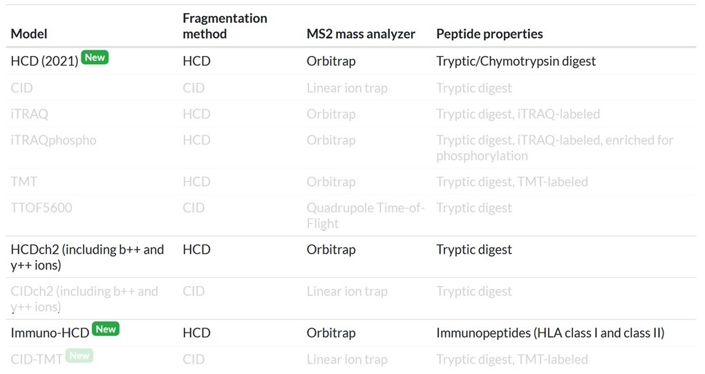
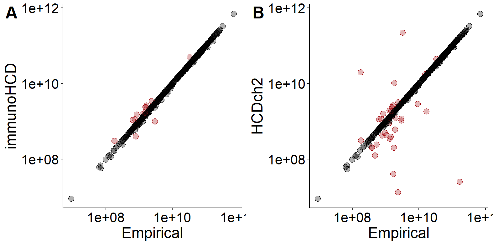
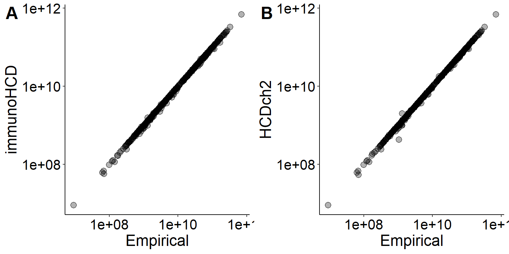
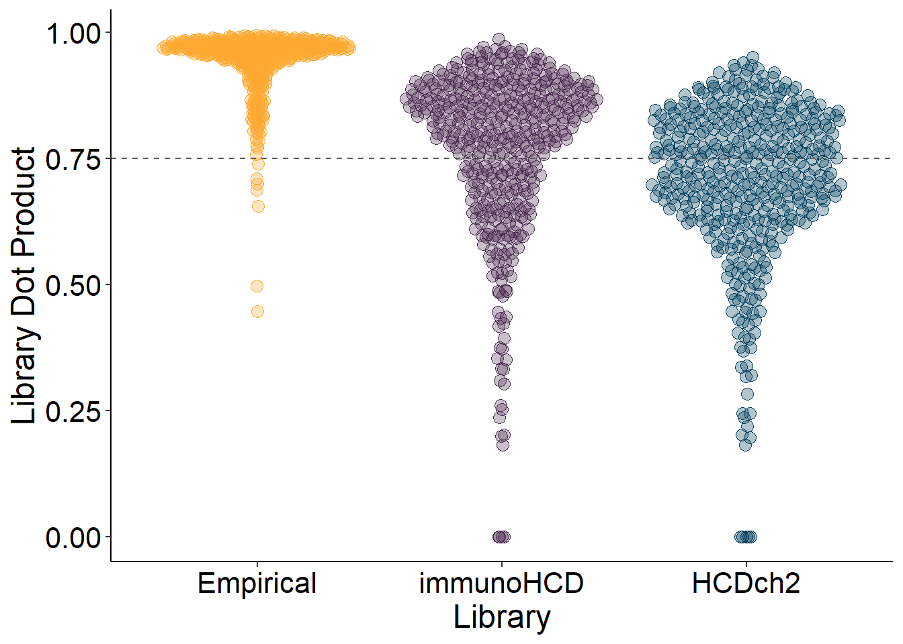
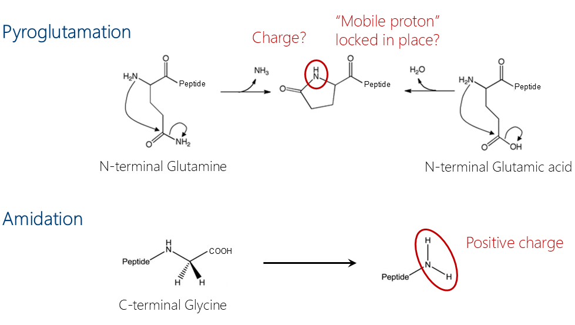
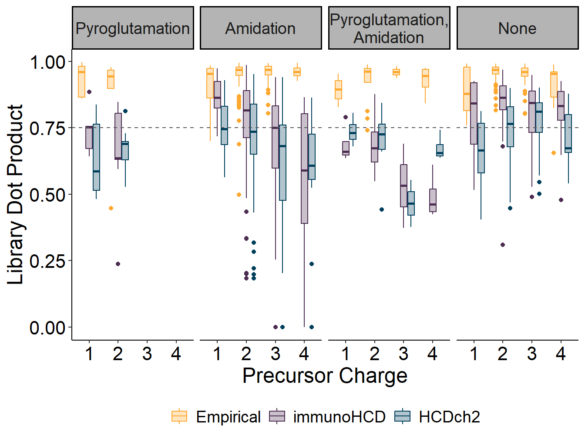

library(tidyverse)
library(ggpubr)
library(ggbeeswarm)Testing MS2PIP, a tool for peptide spectral library prediction, with C. elegans neuropeptides
1 Introduction
In mass spectrometry-based proteomics and peptidomics, peptide identification for targeted (quantitative) techniques, such as parallel reaction monitoring (PRM) and data-independent acquisition (DIA), rely on matching the obtained fragmentation patterns with a reference fragmentation pattern of the peptide(s) of interest. Although the individual masses of the (b and y) fragment ions can be easily calculated, their (relative) intensities are far more challenging to accurately predict, as they are influenced by amino acid composition, location within the peptide, and overall charge state. Hence, most PRM or DIA techniques will employ empirically collected LC-MS/MS fragmentation data of the peptides of interest, commonly referred to as a “spectral library”. A major downside here is that you are depending on the peptide being observed in previously acquired LC-MS/MS runs, be it from running biological reference samples, or from synthetic versions of your peptide(s) of interest.
Generating a peptide library is therefore no trivial task, often requiring multiple LC-MS/MS runs, filtering and selection of high-quality ions. Over the years, several research groups undertook the challenge to train deep learning models (trained on real-life proteomics data) that would be able to generate such libraries from scratch, only requiring the peptide sequence and charge (which can also be predicted fairly accurately). The two most promising models are MS2PIP from the CompOmics group in Gent (Gabriels et al., 2019), and PROSIT from the Proteomics Bioinformatics group in Munich (Gessulat et al., 2019).
During my PhD and postdoc, I’ve been working on the identification of neuropeptides in the model organism C. elegans, and the development of targeted LC-MS/MS approaches for their relative quantification. Although they are both called “peptides”, neuropeptides and the typical tryptic peptides targeted in proteomics methods differ enough to necessitate tailored LC-MS-MS approaches. For one, neuropeptides are typically shorter in length, and do not have the signature C-terminal basic residue as is seen in tryptic peptides (peptidomics workflows do not include a digestion step, since the peptides are already produced within the organism). Hence, models that are trained on tryptic peptides for the prediction of fragmentation spectra produce disappointing results when you feed them neuropeptide sequences. Another problem are the post-translational modifications that are observed on neuropeptides, of which C-terminal amidation and N-terminal pyroglutamation are the most common in neuropeptides. Models trained on tryptic peptides do not factor in these modifications, as they are not common in proteomics. On the other hand, PROSIT always assumes that the peptides have a carbamidomethyl modification on cysteine, as proteomics (but not peptidomics!) sample preparation incorporates a cysteine alkylation step to block Cys-Cys bond formation.
Here, I have tested how two MS2PIP models (immunoHCD and HCDch2) and compared them to my own empirically collected neuropeptide spectral library. The choice for MS2PIP was made based on the fact that (1) they have a model trained on non-tryptic peptides (immunoHCD), (2) that they allow user-specified post-translational modifications, and (3) unlike PROSIT, MS2PIP does not have the built-in assumption that all peptides have carbamidomethylated cysteines, unless specified otherwise.
2 C. elegans neuropeptide spectral library prediction with MS2PIP
While I provided major contributions in the generation of all the data that is described here, it is in its current (unpublished) form not solely mine to share, and is still property of the Temmerman lab. Hence, all references to neuropeptide IDs and specifics regarding the ions targeted have been removed from the datasets.
This analysis was originally performed medio 2023. Any specifics regarding MS2PIP, the available models, and user interface might have changed over time.
MS2PIP offers a variety of models for spectral library prediction (Figure 1). Only one model, immunoHCD, is trained on (non-tryptic) immunopeptides and is the model of interest to be tested here. As a reference, I included HCDch2, which is trained on peptides originating from tryptic digests. The expectation being that immunoHCD should outperform HCDch2, since neuropeptides are probably more similar to immunopeptides than to tryptic peptides.

As specified in the MS2PIP “How To”, a PEPREC input file containing peptide IDs, peptide sequences, modifications, and charge was created, containing the ions of 300 individual neuropeptides (the same amount as in my empirically collected spectral library). User-defined post-translational modifications and their mass shifts are specified in the config file, and consist of:
- Oxidation (Methionine): +15.994915;
- Amidation (C-terminus): -0984016;
- Pyroglutamation (Glutamine): -17.026549;
- Pyroglutamation (Glutamic acid): -18.010565;
- Half of disulfide bridge (Cysteine): -1.007825;
All spectral libraries (my own empirical one, and the MS2PIP generated immunoHCD and HCDch2) are individually used in a Skyline workflow for the analysis of a high-quality PRM dataset. This PRM data was recorded on a sample pool of synthetic C. elegans neuropeptides, and has been analyzed in great detail before, so I know that the spectra of all 300 neuropeptides are present in this dataset and can be detected and quantified when using my own empirical spectral library.
3 Results
3.1 Packages used
3.2 Peak picking correction
During the analysis , Skyline’s peak picking algorithm goes through the PRM data, and based on similarities with what is in the spectral library, will automatically add integration borders for MS1 and MS2 peaks. These integration borders are prone to shift a bit between Skyline analyses, especially when using different libraries. So for a fair comparison, I made sure that (approximately) the same region of integration is selected between the three different spectral libraries. In Figure 2, I plotted the MS1 area under the curve of individual ions when using the empirical database versus those when using immunoHCD and HCDch2 libraries. Immediately, you can see that some ions have vastly different AUC values depending on when the empirical or the immunoHCD/HCDch2 was used. Since I’m using my empirical library as a control, I will manually correct the integration borders in the immunoHCD and HCDch2 analyses to correspond with those where the empirical spectral library was used.
Show code
#Reading in the csv file containing the different AUCs of individual peptides, analyzed with the three different spectral library.
df_noncorr <- read_csv("Empirical-immunoHCD-HCDch2.csv")
#Plot AUCs of data analyzed with the empirical versus immunoHCD library.
Emp_immuno <- ggplot(df_noncorr) +
geom_point(aes(x = `Total Area MS1_Empirical`,
y = `Total Area MS1_immunoHCD`,
color = (`Total Area MS1_Empirical`/`Total Area MS1_immunoHCD`) < 0.95 | (`Total Area MS1_Empirical`/`Total Area MS1_immunoHCD`) > 1.3,
fill = (`Total Area MS1_Empirical`/`Total Area MS1_immunoHCD`) < 0.95 | (`Total Area MS1_Empirical`/`Total Area MS1_immunoHCD`) > 1.3), pch = 21, size = 3, show.legend = F) +
scale_x_continuous(name = "Empirical", trans = "log10") +
scale_y_continuous(name = "immunoHCD", trans = "log10") +
scale_color_manual(values = c("#000000", "#A50F15")) +
scale_fill_manual(values = c("#0000004D", "#A50F154D")) +
theme_classic() +
theme(axis.title = element_text(size = 18),
axis.text = element_text(size = 16, color = "black"))
#Plot AUCs of data analyzed with the empirical versus HCDch2 library.
Emp_HCDch2 <- ggplot(df_noncorr) +
geom_point(aes(x = `Total Area MS1_Empirical`,
y = `Total Area MS1_HCDch2`,
color = (`Total Area MS1_Empirical`/`Total Area MS1_HCDch2`) < 0.95 | (`Total Area MS1_Empirical`/`Total Area MS1_HCDch2`) > 1.3,
fill = (`Total Area MS1_Empirical`/`Total Area MS1_HCDch2`) < 0.95 | (`Total Area MS1_Empirical`/`Total Area MS1_HCDch2`) > 1.3), pch = 21, size = 3, show.legend = F) +
scale_x_continuous(name = "Empirical", trans = "log10") +
scale_y_continuous(name = "HCDch2", trans = "log10") +
scale_color_manual(values = c("#000000", "#A50F15")) +
scale_fill_manual(values = c("#0000004D", "#A50F154D")) +
theme_classic() +
theme(axis.title = element_text(size = 18),
axis.text = element_text(size = 16, color = "black"))
#Arrange plots.
ggarrange(Emp_immuno, Emp_HCDch2, ncol = 2, nrow = 1, labels = c("A", "B"), font.label = list(size = 20))

Based on the information in Figure 2, I manually corrected the integration windows of 15 ions in the analysis with the immunoHCD library, and 32 ions in the analysis with the HCDch2 library. Going by those numbers, it already looks that the HCDch2 is not performing very well, as peak picking seems to fail more often when using that library. Remaking the plots of Figure 2 after manual correction, it is clear that the integration windows between the three analyses are similar enough to make a fair comparison possible (Figure 3).
Show code
#Reading in the csv file containing the different AUCs of individual peptides, analyzed with the three different spectral library - MS1 integration windows corrected.
df_corr <- read_csv("Empirical-immunoHCD-HCDch2_MS1_corrected.csv")
#Plot AUCs of data analyzed with the empirical versus immunoHCD library.
Emp_immuno_corr <- ggplot(df_corr) +
geom_point(aes(x = `Total Area MS1_Empirical`,
y = `Total Area MS1_immunoHCD`),
pch = 21, fill = "#0000004D", size = 3, show.legend = F) +
scale_x_continuous(name = "Empirical", trans = "log10") +
scale_y_continuous(name = "immunoHCD", trans = "log10") +
theme_classic() +
theme(axis.title = element_text(size = 18),
axis.text = element_text(size = 16, color = "black"))
#Plot AUCs of data analyzed with the empirical versus HCDch2 library.
Emp_HCDch2_corr <- ggplot(df_corr) +
geom_point(aes(x = `Total Area MS1_Empirical`,
y = `Total Area MS1_HCDch2`),
pch = 21, fill = "#0000004D", size = 3, show.legend = F) +
scale_x_continuous(name = "Empirical", trans = "log10") +
scale_y_continuous(name = "HCDch2", trans = "log10") +
theme_classic() +
theme(axis.title = element_text(size = 18),
axis.text = element_text(size = 16, color = "black"))
#Arrange plots.
ggarrange(Emp_immuno_corr, Emp_HCDch2_corr, ncol = 2, nrow = 1, labels = c("A", "B"), font.label = list(size = 20))

3.3 Comparing the ions’ dotp values for the different libraries
For each identified ion, Skyline provides a metric that expresses how well the identified fragmentation peaks in your data correspond to the reference spectrum that is present in the spectral library. This metric, the dotp (or normalized contrast angle), ranges from 0 (no similarity at al) to 1 (perfect similarity, observed spectrum and library spectrum are identical). Since the PRM dataset that I am analyzing are pure synthetic neuropeptides, I know that these fragmentation patterns will be of high quality, and each one will correspond to a neuropeptide ion (as these are the only things present in the sample, no background). Hence, I can use the dotp as a quality indicator of the ion fragmentation spectra in the library (which is actually the exact opposite of what the metric is normally used for, and only possible because my PRM data contains purely my neuropeptides of interest).
Hypothetically, when the neuropeptde PRM data is analyzed with a high-quality spectral library, the bulk of the dotp values will be high, almost 1. On the other hand, when the spectral library is of low quality, or the library fragment ions do not correspond with what is in the PRM dataset, the dotp values will drop. In Figure 4, it is obvious that the dotp values of both predicted spectral libraries are far off when compared to the empirical library. Even though the immunoHCD model produces a slightly better library when compared to HCDch2, a significant amount of ions are below 0.75, which is often used as a cut-off for the quality of an identification.
Show code
#Transform dataframe containing dotp values into long format.
df_corr_long <- df_corr %>%
pivot_longer(cols = c(4:12), names_sep = "_", names_to = c("Metric", "Library"), values_to = "Value") %>%
pivot_wider(names_from = Metric, values_from = Value)
df_corr_long$Library <- factor(df_corr_long$Library, levels = c("Empirical", "immunoHCD", "HCDch2"))
#Plot dotp values for all ions, per library used.
ggplot(df_corr_long) +
geom_quasirandom(aes(x = Library, y = `Library Dot Product`, color = Library, fill = Library), pch = 21, size = 3, show.legend = F) +
geom_hline(yintercept = 0.75, lty = 2, color = "#5A5A5A") +
scale_color_manual(values = c("#FEA82F", "#4D2D52", "#003f5c")) +
scale_fill_manual(values = c("#FEA82F4D", "#4D2D524D", "#003f5c4D")) +
theme_classic() +
theme(axis.title = element_text(size = 18),
axis.text = element_text(size = 16, color = "black"))

3.4 Library prediction is negatively affected by post-translational modifications and higher charge states
C-terminal amidation and N-terminal pyroglutamation are two highly common post-translational modifications that are quite common in neuropeptides, but are generally not taken into account for proteomics purposes. Interestingly, these two modifications do happen to have a large impact on the overall charge state of the peptide at acidic pH (at which most peptide-based LC-MS/MS analyses are performed).
Due to its relatively mild basicity, the proton on the peptide’s N-terminal amine is mobile, and can move around along the amide bonds within the peptide (Kinter & Sherman, 2000). One can hypothesize that N-terminal pyroglutamation severely diminishes this proton mobility, as the significantly more basic pyrrole ring will lock the proton firmly in it’s place (Figure 5). On the other hand, the peptide C-terminal normally carries no charge at acidic pH. However, the resulting amide group that occurs after C-terminal amidation will likely be positively charged at an acidic pH (Figure 5).

It is fair to assume that both these modifications have a severe impact on peptide charge and fragmentation pattern, for which the currently available prediction models cannot accommodate. To find out if this is also the case for the C. elegans neuropeptides, I’ve plotted the dotp values of the different neuropeptide ions according to their different modifications: amidation, pyroglutamation, amidation & pyroglutamation, or none at all (Figure 6).
Show code
#Set factors.
df_corr_long$`Precursor Charge` <- as.factor(df_corr_long$`Precursor Charge`)
df_corr_long$`PTM` <- factor(df_corr_long$`PTM`, levels = c("Pyroglutamation", "Amidation", "Pyroglutamation,\nAmidation", "None"))
#Create plot split by charge and PTM.
ggplot(df_corr_long) +
facet_grid(.~PTM) +
geom_boxplot(aes(x = `Precursor Charge`, y = `Library Dot Product`, color = Library, fill = Library)) +
geom_hline(yintercept = 0.75, lty = 2, color = "#5A5A5A") +
scale_color_manual(values = c("#FEA82F", "#4D2D52", "#003f5c")) +
scale_fill_manual(values = c("#FEA82F4D", "#4D2D524D", "#003f5c4D")) +
theme_classic() +
theme(axis.text = element_text(color = "black", size = 16),
axis.title = element_text(size = 18),
legend.text = element_text(size = 14),
legend.title = element_blank(),
legend.position = "bottom",
strip.text = element_text(size = 14),
strip.background = element_rect(fill = "#B4B4B4"))

Pyroglutamation seems to have the most detrimental effect on fragment spectra prediction, with almost no ions having a dotp over 0.75 (Figure 6, first panel). For amidated neuropeptides, the model’s predictive success seems to depend on precursor charge, where dotp values drops for amidated neuropeptides with higher charge states (Figure 6, second panel). This could be a consequence of the amidation modification resulting in an additional charge (Figure 5). A combination of these both effects is seen for neuropeptides that are pyroglutamated and amidated, where most dotp values are below 0.75, and drop further with higher charges (Figure 6, third panel). Although the immunoHCD model performs best for neuropeptides with no modifications at all, it still cannot match the results obtained with an empirical spectral library (Figure 6, last panel). As expected, the HCDch2 model, which is trained on tryptic peptides, performs the worst of all in almost all instances.
4 Conclusions
Tools such as MS2PIP are an amazing addition for predicting peptide fragmentation patterns in proteomics workflows. However, for more specialized mass spectrometry-based research that does not depend on tryptic peptides, predictions are often severely flawed. The MS2PIP team partially tried to solve this by training new models on data containing non-tryptic peptides, such as immunopeptides.
It seems that just broadening the training data to non-tryptic peptides is not enough, since some “unusual” modifications present on (C. elegans) neuropeptides are enough to result in unreliable predictions from the models (Figure 6). Hopefully, future MS2PIP models will include more peptides originating from various sources beyond tryptic digests and immunopeptides, and have a higher variety of post-translational modifications.
References
Gabriels, R., Martens, L., & Degroeve, S. (2019). Updated MS²PIP web server delivers fast and accurate MS² peak intensity prediction for multiple fragmentation methods, instruments and labeling techniques. Nucleic Acids Research, 47(W1), W295–W299. https://doi.org/10.1093/nar/gkz299
Gessulat, S., Schmidt, T., Zolg, D. P., Samaras, P., Schnatbaum, K., Zerweck, J., Knaute, T., Rechenberger, J., Delanghe, B., Huhmer, A., Reimer, U., Ehrlich, H.-C., Aiche, S., Kuster, B., & Wilhelm, M. (2019). Prosit: proteome-wide prediction of peptide tandem mass spectra by deep learning. Nature Methods, 16(6), 509–518. https://doi.org/10.1038/s41592-019-0426-7
Kinter, M., & Sherman, N. E. (2000). Protein Sequencing and Identification Using Tandem Mass Spectrometry. https://doi.org/10.1002/0471721980